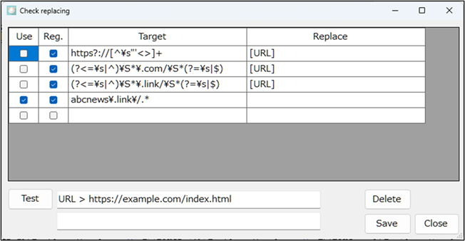

Original text replacing settings
This is a setting for replacing specific strings in
the original text before translation.


You can replace or remove distracting strings during translation and text-to-speech.
In the example shown, URLs are replaced with the string "URL".